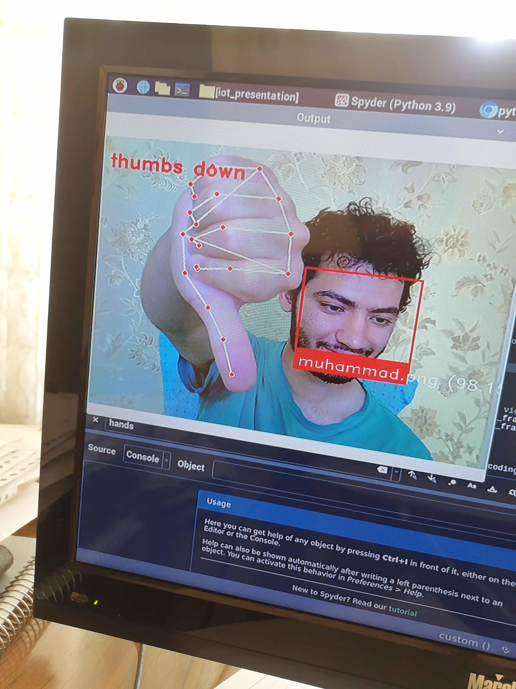

Open source · Python / C (ESP32)
github.com/muhammadzareii/iot_fun-mainOverview
The Wireless Identity Recognition System is an edge-IoT project that combines computer vision running on a host machine with an ESP32 microcontroller acting as the network server and actuator dispatcher. The Python client runs two concurrent inference threads — one for face recognition, one for hand gesture classification — and streams results over a TCP socket to the ESP32, which can trigger outputs (relays, displays, actuators) based on the identity and gesture commands received.
The system demonstrates the practical integration layer between a high-compute host (laptop/SBC) and a low-power embedded node: the host does the perception, the embedded node does the action. This is a common pattern in smart building, access control, and human-machine interface systems.
System Architecture
Face Recognition Module
Face recognition uses the face_recognition Python library, which wraps a pre-trained
deep convolutional network (dlib's ResNet-based model) to produce 128-dimensional face encodings.
Enrolled faces are stored as a set of reference encodings; at runtime, the encoding of each detected
face in the camera frame is compared to all references using Euclidean distance. A distance threshold
(typically 0.6) determines match/no-match.
The library handles face detection (HOG-based or CNN), face alignment (landmark-based warping), and encoding in a single pipeline. On a modern CPU this runs at 2–5 FPS for a 720p frame with one face; the thread decouples this from the main application loop, preventing UI lockup.
Gesture Recognition Module
Hand gesture classification uses MediaPipe Hands, which provides 21 3D hand landmarks (wrist + 4 joints per finger) in real time from a single camera. The 21 landmarks (63 coordinates: x, y, z for each) are normalised relative to the wrist position and wrist-to-middle-finger distance, then fed to a classifier.
| # | Gesture Class | Landmark Signature |
|---|---|---|
| 0 | Open palm | All fingers extended, spread |
| 1 | Fist | All fingers curled |
| 2 | Point (1 finger) | Index extended, others curled |
| 3 | Peace / V sign | Index + middle extended |
| 4 | Three fingers | Index + middle + ring extended |
| 5 | Four fingers | All except thumb extended |
| 6 | Thumb up | Thumb extended, others curled |
| 7 | Thumb down | Thumb down, others curled |
| 8 | OK sign | Thumb + index touching, others extended |
ESP32 Server
The ESP32 firmware (C, Arduino framework) runs a TCP server socket. On receiving a JSON payload
{"id": "Muhammad", "gesture": "thumb_up"}, it parses the fields and dispatches the
appropriate action: toggling a GPIO for relay control, writing to a serial UART for downstream
device control, or updating an I²C OLED display with the identity string.
The ESP32 operates in station mode (connects to the existing Wi-Fi network) or access point mode (hosts its own network for direct laptop connection). Connection loss is handled by the client-side reconnect loop with exponential backoff.
System Photos

